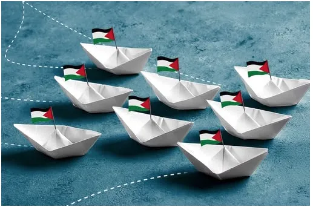
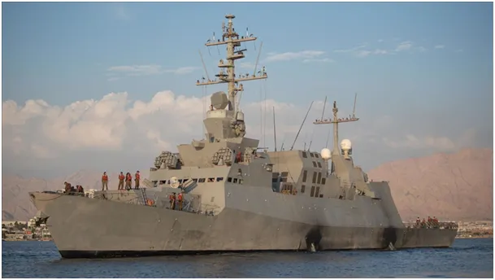
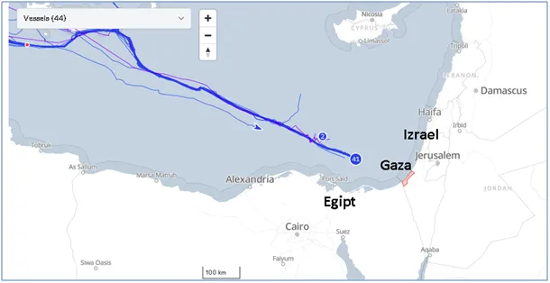
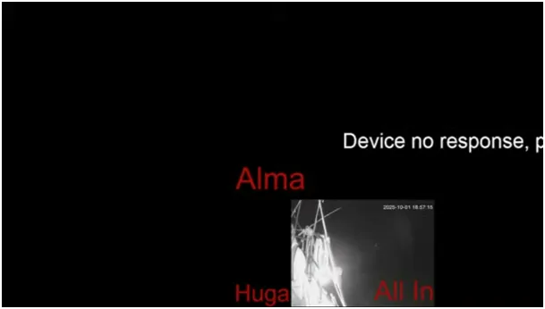

Psia wachta
Flotylla sprzeciwu wobec nieludzkiej blokady Strefy Gazy jest około 130 km od brzegów, i z każdym metrem zbliża się do strefy przybrzeżnej (22 km) oficjalnie zarządanej przez Hamas, ale w praktyce kontrolowanej obecnie przez Izrael. Mówiąc po ludzku armia strzela do wszystkiego co tam się rusza. Blokada nie dotyczy tylko Palestyńczyków, ale też obywateli Izraela, których wielu już uciekło z raju czołgów drogą morską, najczęściej na pobliski Cypr.

Wiatr sprzyja ponad 40-stu łodziom płynących pod żaglami, ale nie sprzyja im pora o jakiej znajdą się u brzegów Palestyny jeśli nie zmienią kursu. Wpłyną w obszar potencjalnych ataków armii kilka godzin po północy, czyli w tzw. "psiej wachcie", gdy ludki organizm i psychika jest w najgorszej kondycji. Spodziewałem się że wieczorem flotylla odbija na południe i noc przeczeka w egipskiej strefie terytorialnej morza, czyli 12 mil od brzegu i rano ruszy na wschód do Gazy. Niestety łodzie w stałym tempie ok. 9 km/h płyną na wschód na spotkanie z nieznanym.

Świat mocno naciska na Izrael, ale na lądzie ciągle trwają brutalne ataki na cywilów, w tym na dzieci szukające jedzenia. Flotylla ubiegłej nocy raportowała ataki elektroniczne i awarie sprzęt. Przed kwadransem zanikła transmisja z większości łodzi co obrazuje czarna ilustracja z transmisji.

Oni i cały świat modlą się, muzułmanie często wzywają tych samych aniołów co my. Religijni Żydzi w trosce wspominają tego samego drobnego Dawida, który obalił Goliata i życzą zdrowia ochotnikom na małych łodziach, które krucho wyglądają wobec potężnych okrętów. Przed nami długa noc.
Paweł Klimczewski